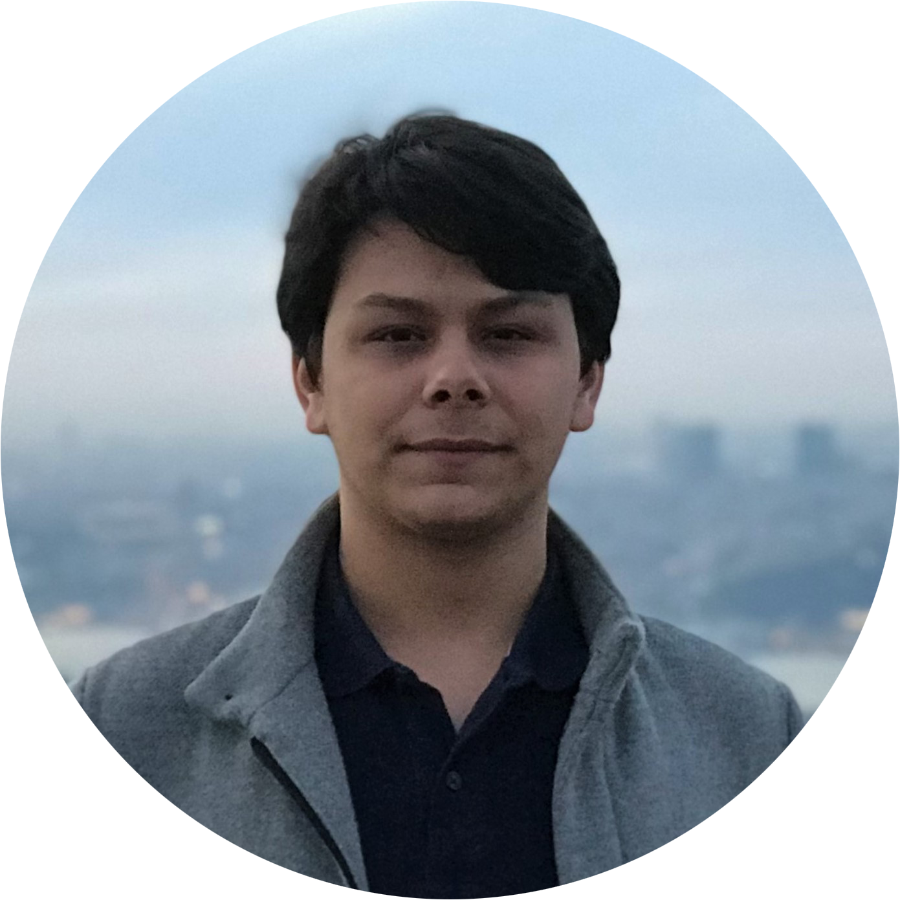

Ali Sacid Karadoğan
Embedded Software Engineer
Biography
I am a student who interested in digital signal
processing, hardware design, deep learning and artificial intelligence(AI). Currently I am improving myself
by studying electronics
engineering to specialize on embedded systems and
object oriented software development.
Also working as a part-time Embedded Software Engineer at BosphorusISS.
Expreience
- BosphorusISS – Levent, Istanbul, Turkey
- Embedded Software Engineer, Oct 2019 – Present
- Embedded Software Engineering Intern, Aug 2019 – Sep 2019
- Working with an agile environment. Object Oriented Programming using C /
C++.
- Computer Society, Gebze Technical University
- Mobile Application Developer Jul 2019 – Present
- Design and development of user interface for the computer society mobile application using
Dart and Flutter.
- Hazine Autonomous Vehicle, Gebze Technical University
- Embedded Software Developer, Jun 2019 – Present
- Aselsan A.Ş., – Yenimahalle, Ankara, Turkey
- Production Directorate – Electronics Engineering Intern, Jul 2019
- System Production
- Electronic Production
- Lean Production
- Denge Bilgisayar, Mecidiyeköy, Istanbul, Turkey
- Frontend Web Developer, Jul 2018 – Aug 2018
- UI designing and front-end web development of an Android application using JS &
Ionic Framework
- IT Support Assistant, Feb 2018
- Uploading the product information pages of the B2B website using HTML
- Researching about details of last generation products.
- Remote IT Support Assistant, Aug 2017 – Feb 2018
- Uploading the product information pages of the B2B website using HTML remotely
- Researching about details of last generation products
- Training new assistants about updating product information
- IT Support Assistant, Jul 2017 – Aug 2017
- Uploading the product information pages of the B2B website using HTML
- Researching about details of last generation products.
Languages
- English – Full professional proficiency
- Türkçe – Native or bilingual proficiency
- Русский – Elementary proficiency
- عربى – Elementary proficiency
Education
- 2016 – 2020, Electronics Engineering at Gebze Technical University
- 2015 – 2016, Computer Engineering at Gazi University
Projects
- Hazine Autonomous Car, Jun 2019 – Present
– Electronic design and embedded software development.
See project on
YouTube
- DSP Education & Laboratory Kit (Graduation Project), Oct 2018 – Present
Under supervision of A.
Köksal Hocaoğlu – Vice President of Department of Electronics Engineering, Gebze Technical University;
–
Development of an laboratory kit through Python and C using various sensors on Raspberry Pi with embedded
Linux.
– Software and hardware testing of the laboratory kit for various scenarios using preliminary
studies of digital signal processing course laboratory experiments.